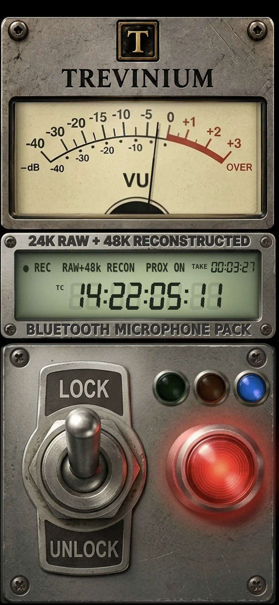
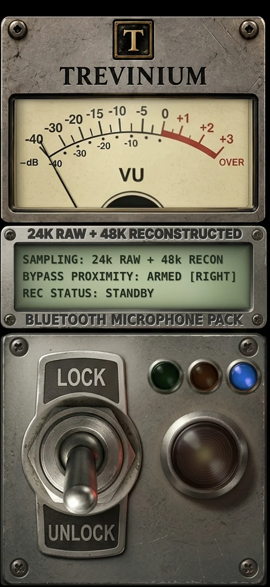
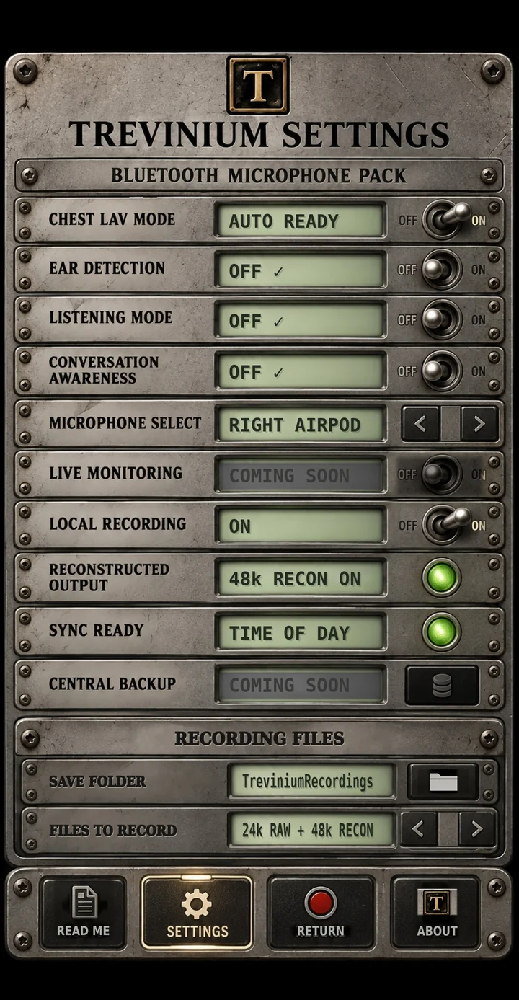

✦ COMING JANUARY 2027 ✦
TREVINIUM
Bluetooth Microphone Pack
48 kHz ENHANCED · 24 kHz RAW
The microphone recorder app that turns your AirPods into a wireless lav microphone.

✦ COMING JANUARY 2027 ✦
Bluetooth Microphone Pack
48 kHz ENHANCED · 24 kHz RAW
The microphone recorder app that turns your AirPods into a wireless lav microphone.
TREVINIUM is a microphone recorder app that turns your AirPods into a wireless lav microphone.
Your phone does the recording. No transmitter, no receiver, no extra gear.
It works like real studio gear: a VU meter, an LCD screen, a lock switch and a big red record button.
Built for filmmakers.

Everything you would want from a lav pack, on the phone you already carry
Keeps your AirPod recording as a lav microphone. On Android, ear detection and noise control are turned off automatically on every take.
Enhanced, not just upsampled like other apps. Your original sound is never touched. TREVINIUM only adds the airy detail at the very top of the range, right on your phone.
A backup of your microphone exactly as recorded, saved with every take.
Time-of-day timecode, so several phones line up in editing. The take length runs right beside it.
Nothing stops a take by accident. It keeps recording with the screen off and the phone in a pocket.
Set your levels like a pro and always see what is recording and where it is saved.
Many apps call themselves "48 kHz" when all they do is upsample: they stretch ordinary Bluetooth audio into a bigger 48 kHz file. The file gets bigger. The sound stays the same.
TREVINIUM never touches your original audio. It keeps every bit of your voice exactly as recorded, and only adds the airy, high detail at the very top of the range, the part you feel more than hear.
And the untouched 24 kHz raw recording is always saved beside it as your backup.
Three steps, every take
Your AirPod sends its microphone to the phone over Bluetooth.
The app saves the 24 kHz raw recording, exactly as it came in.
The app adds the enhancement on the phone and saves the 48 kHz Enhanced file. Your original is never touched. No internet needed.
Coming January 2027 to Google Play and the App Store



Follow us to be the first to know when it is out.
On Instagram & YouTube, for the launch news
Yes. The Enhanced file is a full 48 kHz file, and it is enhanced, not just upsampled. Your original sound is left untouched; only the airy top end, the part you feel more than hear, is added on your phone. The 24 kHz raw file is always saved as your untouched original.
No. Everything happens on your phone, and your recordings stay there.
To Documents/TreviniumRecordings, or any folder you choose in Settings.
The app records from the phone's own microphone instead, so you never lose the take.
Yes. It is coming to the App Store in January 2027 and needs iOS 26.
Student and independent films often have bad sound, because lav microphones and wireless packs cost money most crews don't have.
But everyone already carries a phone, and most carry AirPods. TREVINIUM puts them to work.
Made by Professor John Treviño, MFA · Rio Grande Valley, Texas